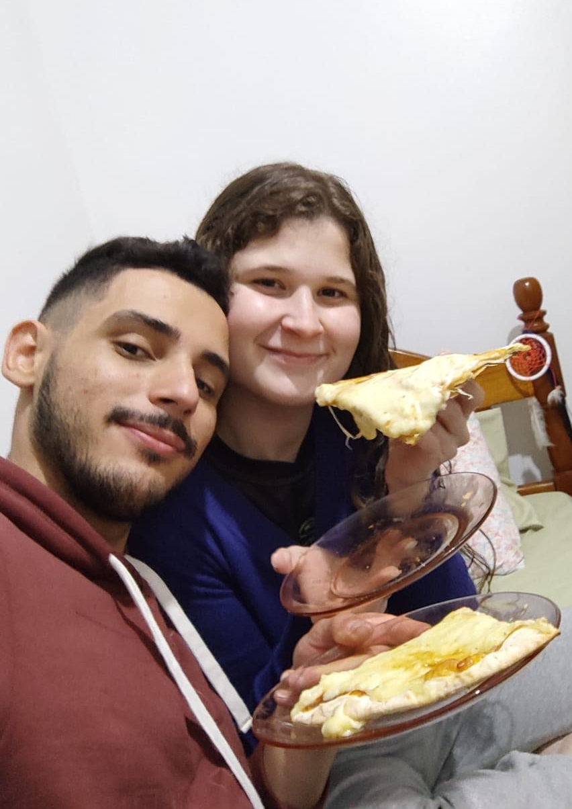

Filmes Populares

LoveFit: My love story (2022)
 9.5
9.5
 Favoritado
Favoritado
Laura é uma estudante universitária, com personalidade bastante alegre e agitada, apesar de tudo, a jovem é indiferente ao amor e não deseja se apaixonar novamente ou se envolver em um relacionamento. Porém, ao conhecer George em uma academia perto de sua casa, inesperadamente tudo começa a mudar.
Embora ela esteja obstinada a não se apaixonar, este jovem está decidido a fazer ela amar ele mais do que ela ama chocolate.

O Senhor dos Anéis: A Sociedade do Anel (2001)
8.8
Favoritado
A meek Hobbit from the Shire and eight companions set out on a journey to destroy the powerful One Ring and save Middle-earth from the Dark Lord Sauron.